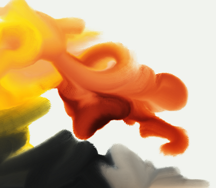
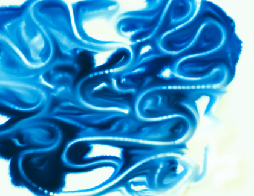

PETRI is an audiovisual art project that explores emergent behaviour. Populations of cells interact through simple rules that determine their attraction or repulsion towards each other. These interaction can be either attractive or repulsive. The motion is coupled to a viscous fluid, simulated by solving the Navier–Stokes equations. The user can interact with the digital organisms by poking or stirring the fluid. The visuals are accompanied by musical fragments that react directly to the resulting motion.
When we want to recreate the sound of a real instrument on a computer, the typical approach is to pre-record every note on a real instrument. This can be quite expensive, and it also often fails to sound realistic. Recorded sounds can never replicate the expressivity of a human player. An alternative approach is physical modeling synthesis. Here, a digital model of the instrument is simulated in real time. Because the acoustics of instruments can be quite complex, this can be hard to achieve. However, with some effort the results can be amazing. Many of these models are based on research done at the Center for Computer Research in Music and Acoustics (CCRMA) at Stanford University.
I have implemented several of such models. Below are some audio demos:
|
Violin |
Flute |
|
Trumpet |
Guitar |
Many artists use digital painting software these days. The way color is digitally represented, by the RGB color model, can not accurately represent real pigments. For example, when mixing blue and yellow in most painting software, the result is not the expected green, but instead a dark gray. To solve this, I built a painting app that simulates pigments in the whole visual spectrum and models their mixing using Kubelka-Munk theory. The result is a digital color model that is intuitive to people who are used to real paints.
 An experimental audio app where people can draw notes freely. Inspired by composer Iannis Xenakis.
A collaboration between my friend petet and me. Fallspire is a demo for a retro-inspired virtual console called TIC-80. It received a honorable mention in category 'new talent' and was nominated for category 'best direction' at the 2020 Meteoriks awards.